{kind=link}
The essentials in 30 seconds
- During an alert: tap ACKNOWLEDGE — silence siren, then Where to shelter. GROTA shows the nearest place and the route at once. Tap NAVIGATE ➜.
- In advance, calmly: in the Places tab add your home, work or your child's school, and choose up to three shelters for each. Ask the building manager whether and when they are open.
- For when there is no internet: in the Prepare tab download the map of your province (Map and routes).
- Remember: GROTA is a list of places, not a promise they will be open. When you hear sirens or get an RCB alert, follow the official message.
What the points in GROTA are
They are 85,837 shelter points from the public list of Poland's State Fire Service (“Punkty schronienia w Polsce”, dane.gov.pl). The list does not say whether a point is a bunker, a shelter or a makeshift refuge, or how many people fit — the full register is not public. It does say when a point is accessible, shown by the dot colour:
🟢 24 hours
Accessible around the clock, e.g. underpasses, metro stations, some underground car parks.
🟠 During set hours
Open while the building is in use or staffed — a school, an office, a shopping centre. The hours are not in the data: check them in advance.
🔵 On request
Usually locked (a block's basement, a shared garage). In an emergency the manager or residents open it. Ask in advance who has the key.
GROTA covers all of Poland and only Poland. The list of points is on the phone, so finding the nearest one works offline too.
1. How to open GROTA
During an alert: on the alert screen tap ACKNOWLEDGE — silence siren. The siren stops and three buttons appear: Where to shelter, Watch the map and I am safe. Strażnik never switches the screen on its own — you choose. Where to shelter opens GROTA straight on the NOW tab and finds your position. GROTA starts loading as soon as the alert appears, so it opens at once.
At any time: the bottom tab More → Shelter — nearest. This opens the Map tab.
Back to Strażnik: the ‹ Strażnik button top left, or the system “back” button. “Back” first undoes a step inside GROTA (closes a point card or panel), and only then returns to Strażnik.
At the bottom GROTA has five tabs: Map, Places, the red NOW, Prepare and Rules.
{kind=link}
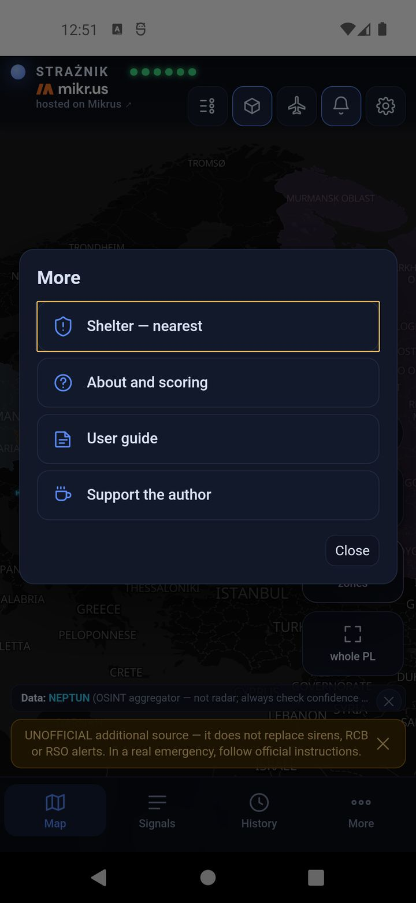
{kind=link}
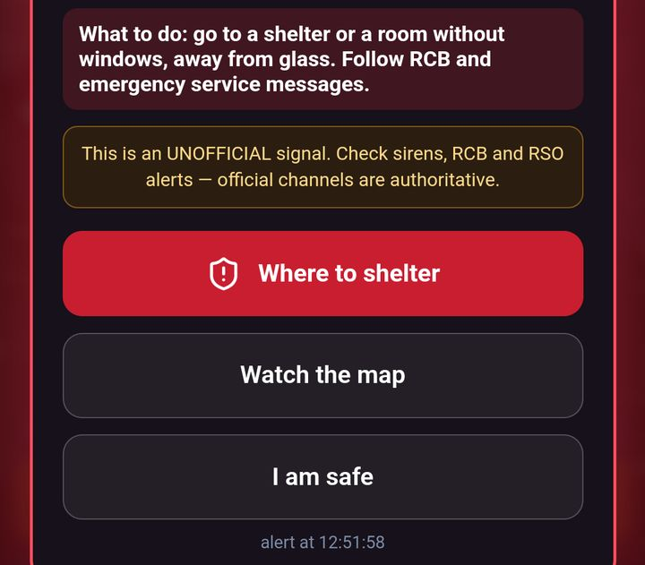
2. During an alert — the NOW tab
NOW is the screen for the moment of danger. When opened it finds your position and shows the result straight away. There is nothing to set up.
Step 1. Where I am searching from
Under the quote from the Safety Guide you see “Searching from: GPS ±5 m” — where GROTA measures from. If the position is wrong or GPS fails: GPS position (try again), Enter an address or I'm at: Home (your saved place). Below, choose how you move: On foot, Bike or Car. Finish clears the position and route.
Step 2. The nearest place and the route
The big card “Nearest verified shelter” gives the address, distance, time and type of access. The map shows the route from “You are here” to “Goal”. NAVIGATE ➜ opens Google Maps navigation. Below there is an aerial photo (the point in the middle), Street View and Show on map.
{kind=link}
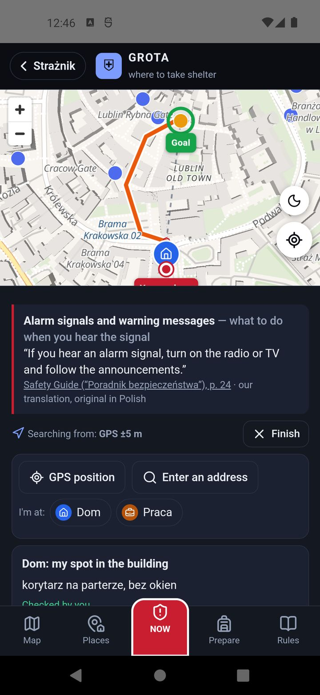
{kind=link}
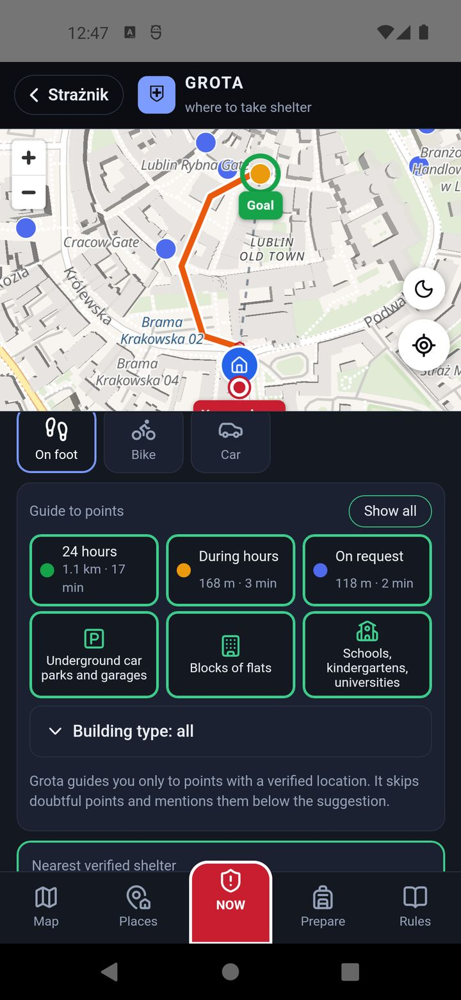
{kind=link}
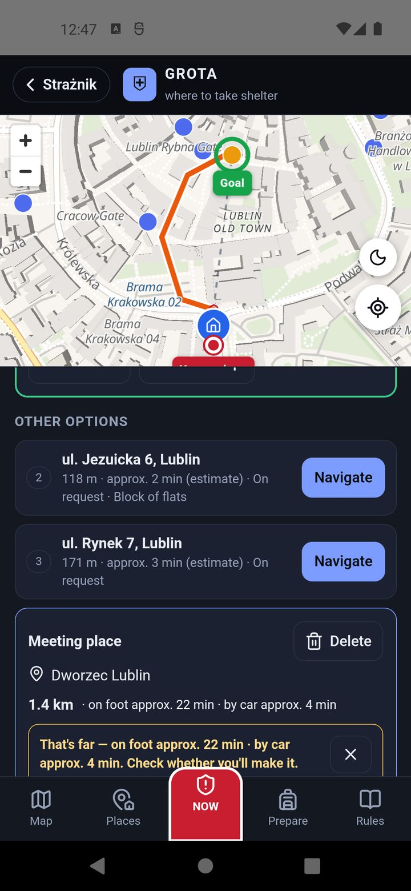
Step 3. When the first suggestion does not fit
“Guide to points” shows how far the nearest point of each type is — e.g. “24 hours 1.1 km”, “On request 118 m”. Switch off a type that does not suit you (e.g. locked “on request” points at night) and GROTA immediately picks the nearest of the rest. The building-type shortcuts (underground car parks, blocks of flats, schools) and Building type: all work the same way.
Further down, “Other options” lists the next points, numbered 2, 3… Tapping one moves it to first place, with a route. Useful when the first one is across a busy road or turned out to be locked.
GROTA only guides you to points with a verified location. If a point with a doubtful location (a pin on a lawn, not on a building) is closer, GROTA mentions it under the suggestion but does not guide you there.
Will I make it? — an alert with a time
When Strażnik knows the time until the threat (e.g. an object heading for your province), GROTA compares it with the time to get there. If by the estimate you will not make it, you see “By the estimate you won't make it” and the route turns red. Then follow the Safety Guide advice shown with it: stay in the building, away from windows, by load-bearing walls, on the lowest floor.
{kind=link}
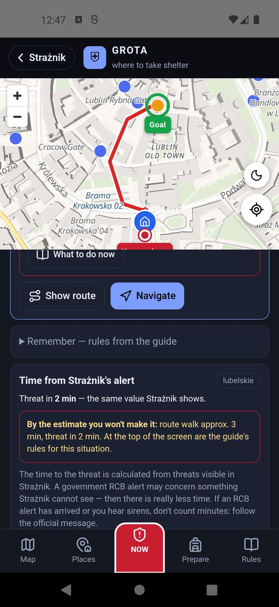
| Route colour | Meaning |
|---|---|
| green | by the estimate you will make it |
| red | by the estimate you won't make it |
| purple, teal, blue | on foot, by bike, by car — no time comparison (no alert, or Strażnik does not know the time) |
| orange | your recorded route (section 5) |
| dashed straight line | direction only, as the crow flies |
When GPS fails, is inaccurate or shows another country
- Finding the position takes a while: don't wait — tap I'm at: Home, enter an address or Pick on the map.
- No location permission: GROTA tells you where to turn it on (Settings → Apps → Strażnik → Permissions → Location); meanwhile you pick the place by hand.
- A very approximate position (e.g. ±3 km): GROTA asks whether you want to pick a place or Show anyway, and marks the result as approximate.
- Outside Poland: GROTA only knows points in Poland, so instead of a route it says “You are outside Grota's data coverage.” If you are in Poland right by the border and the phone put you on the other side of the river, set your position by hand.
{kind=link}
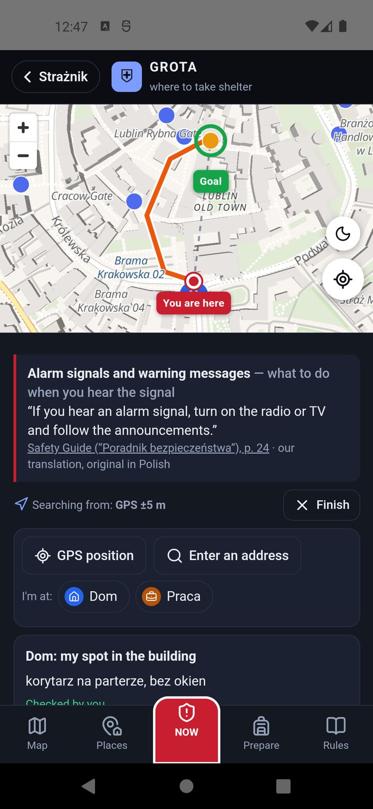
{kind=link}
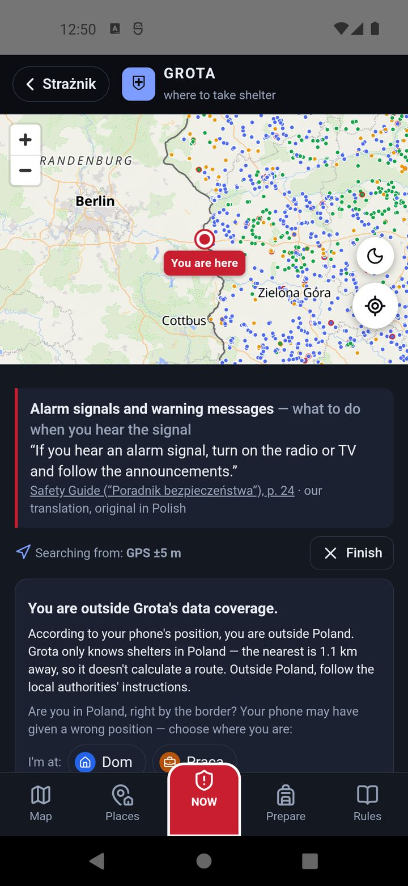
When NAVIGATE does nothing (no Google Maps or no internet): on the point card tap Draw the route here, on Grota's map. GROTA draws an approximate route from what the phone has — along streets with an offline map, otherwise in a straight line.
3. Meeting place
If you have agreed a meeting place with your family, enter it in the “Meeting place” card at the bottom of NOW: Set a place → an address or a point on the map. GROTA shows the distance and time on foot and by car, the route (Show route, Navigate), and warns you when it is too far to make it in time. Delete removes it.
{kind=link}
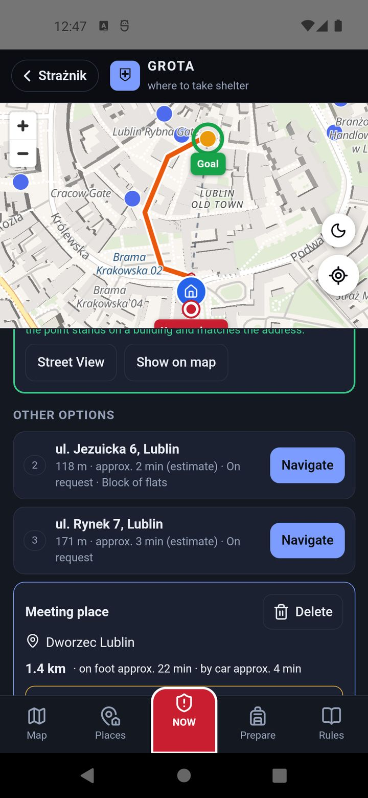
4. The Map tab
The map shows every point in Poland. The dot colour is access (green — 24 hours, orange — during set hours, blue — on request) and the outline is how sure the location is (grey — verified, yellow — to check, red — doubtful). Map buttons: +/− zoom, moon/sun switches the light and dark map, the crosshair shows your position.
Tap a dot and the point card appears under the map: address, municipality, building type (from OpenStreetMap), access with an explanation, distance and time, location certainty, an aerial photo, Navigate, Street View and Draw the route here, on Grota's map. If you have saved places, you also see “Save as a shelter for:” with buttons for your places.
{kind=link}
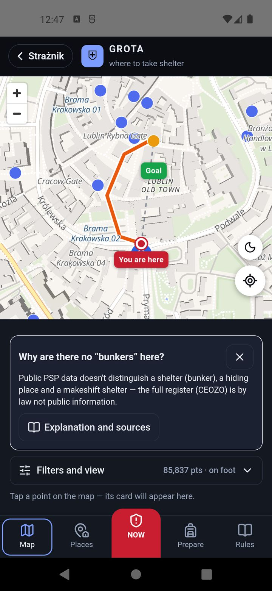
{kind=link}
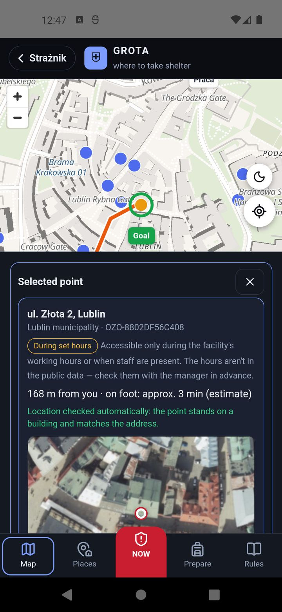
{kind=link}
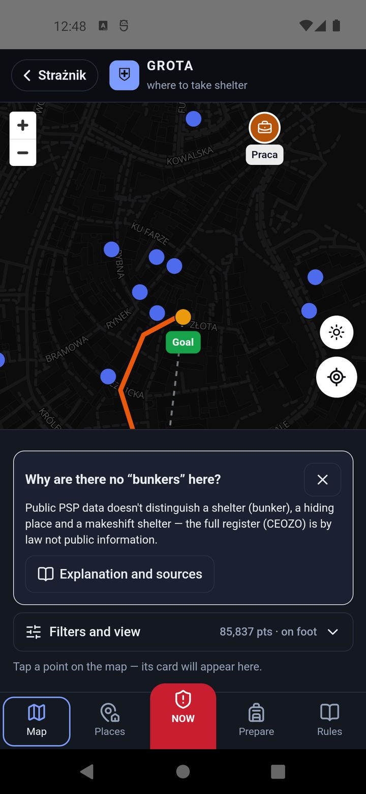
Filters and view
Filters and view under the map shows only selected points: by access (24 hours, During hours, On request), by location certainty (Verified, To check, Doubtful) and by building type (11 groups, e.g. underground car parks, blocks of flats, schools, hospitals). Each button toggles its group; Show all selects everything, and pressed again — clears it. Here you also choose On foot, Bike or Car.
{kind=link}
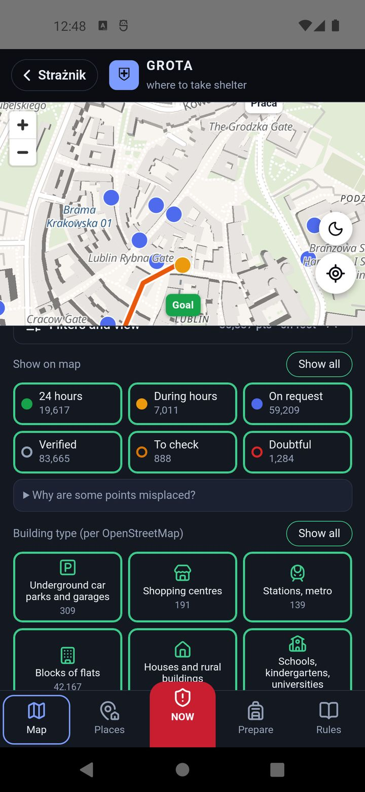
{kind=link}
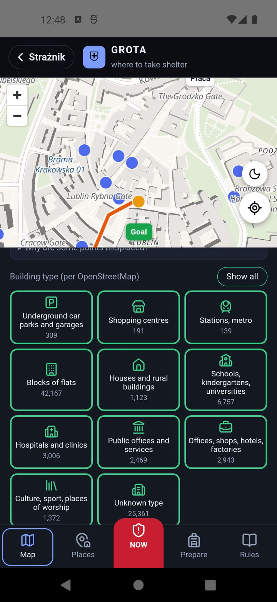
Why are there no “bunkers” here? On the first visit GROTA explains that the public PSP data does not distinguish a bunker, a shelter and a makeshift refuge, and the full register is not public by law. Explanation and sources leads to the Rules.
5. The Places tab — prepare in advance
Here you save your regular places — home, work, your child's school, family — and choose their shelters in advance. During an alert, just tap I'm at: Home and the result is there at once, even without GPS. Places are stored only on this phone.
Adding a place
- In “Add a place” choose the type: Home, Work, School / university, Kindergarten / nursery, Family / relatives, Allotment / cottage or Other.
- Enter a name and address, then Search — or My position / Pick on the map.
- Tap the place's tile and in “Choose shelters” tick up to three points from the list of the nearest ones.
{kind=link}
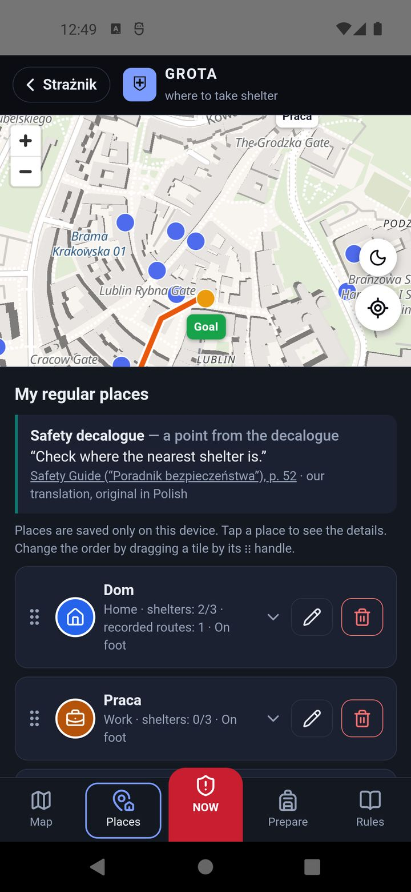
{kind=link}
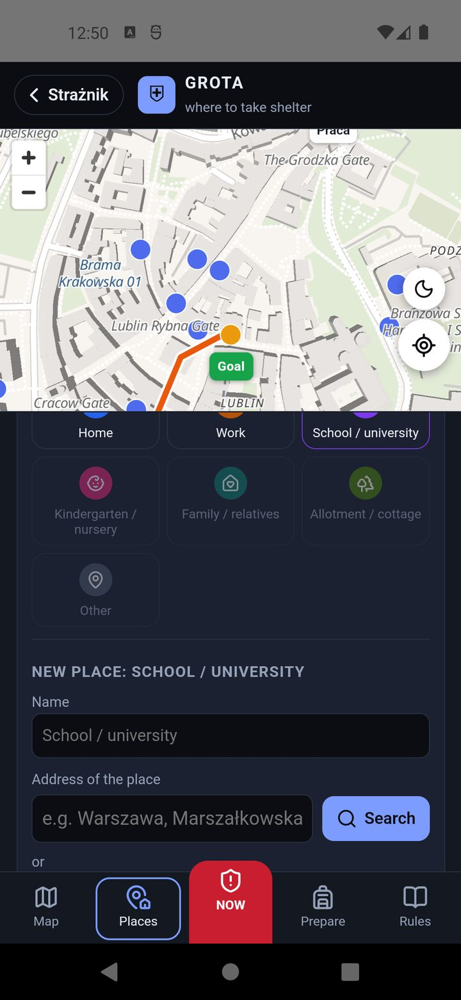
{kind=link}
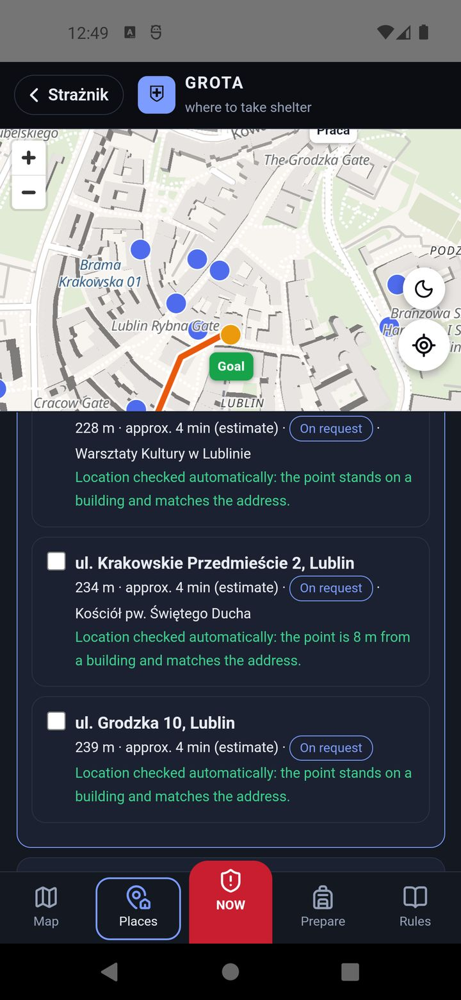
Details, notes and editing
A place's details show its location, “My spot in the building” (e.g. “ground-floor corridor, no windows” — where to hide if you can't get out in time) and the chosen shelters. Each shelter has a field “How to get in — hours, who opens it, building manager's contact (your note)”. It is worth filling in after talking to the manager. The pencil opens editing: name, location, type, your spot in the building with a tick “I have checked this spot on site”, a short checklist and the means of transport. Changes save themselves. The bin deletes a place, and the ⋮⋮ handle changes the order.
{kind=link}
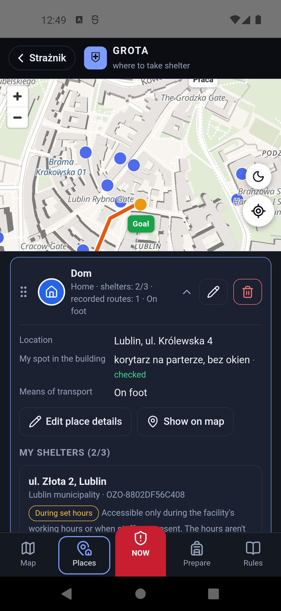
{kind=link}
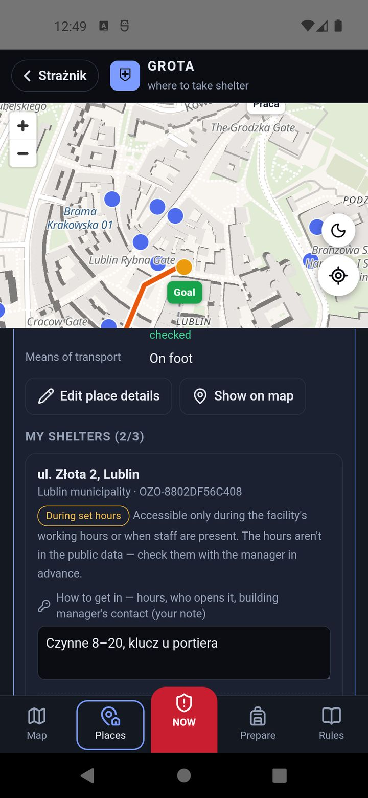
Record your own route
For each shelter you can record the route by walking it once, calmly: Record your route, walk, then Finish and save. Keep the screen on while recording. During an alert, when you are within 300 m of that place, GROTA shows your orange route instead of the calculated one — with passages and shortcuts that are not on the map.
6. The Prepare tab
Offline map — for when there is no internet
During an alert the network may be overloaded. Shelter points and distances always work, because the list is on the phone. To see streets and get a route offline, download a map in advance:
- Choose the area: Around a place (25, 50 or 75 km around your position or a saved place), Province or All of Poland (about 2 GB — Wi-Fi only).
- Choose what to download: Map and routes (recommended; only this lets GROTA guide you offline in the countryside too) or Map only (smaller; offline you get a straight line instead of a route).
- Tap Download map. GROTA shows beforehand how much it will download and how much space it takes. Keep the app open while downloading; an interrupted download later fetches only the rest.
- Test offline pretends there is no network, so you can see what will work. End test returns to normal.
{kind=link}
{kind=link}
{kind=link}
Sizes: a province from a few dozen to a few hundred MB (the list shows the exact number), all of Poland about 2 GB. Remove a downloaded map with Delete in the same card. An offline map also leaves room for others: everyone who has it on their phone takes load off the server during an alert.
Preparation checklists
Below are 8 checklists quoted from the Safety Guide and from the Ministry of the Interior's response instruction: Basement or garage — check before you shelter there, House or flat, Household supplies for at least 3 days, Emergency backpack, Crisis plan, Work, School and People who need special help — 44 items in all. The basement and garage list is new in release 1.7.80: it quotes the Ministry of the Interior's response instruction (pp. 8–10). Open expands a list; tick what you already have. A list's frame is red below 40%, yellow in progress and green when complete. Progress stays on the phone.
{kind=link}
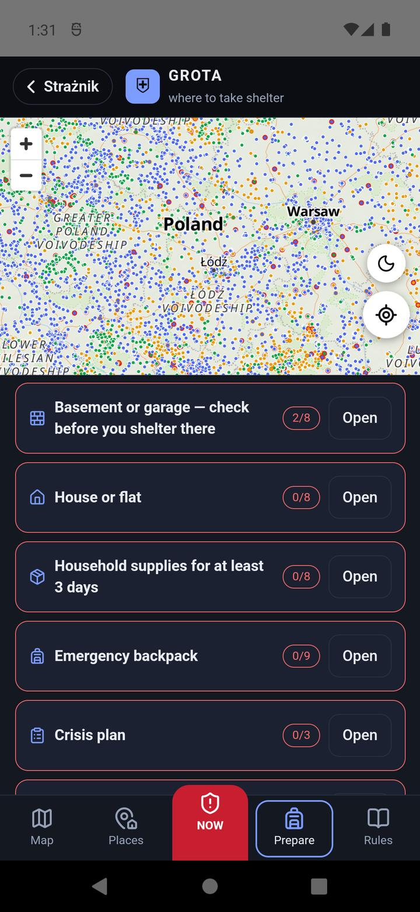
{kind=link}
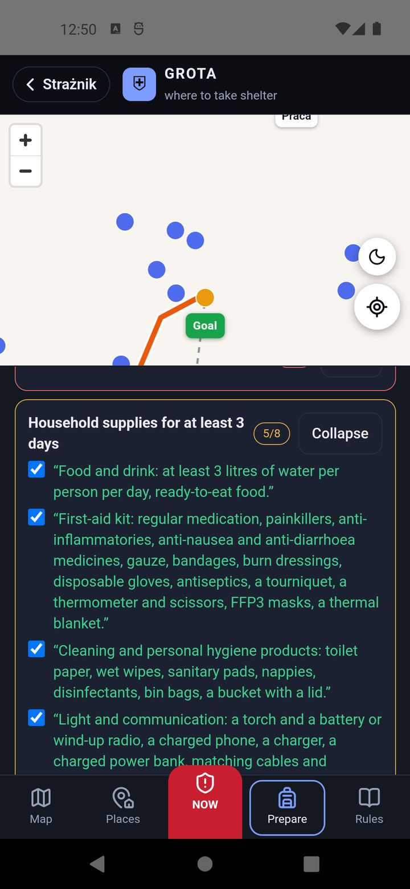
7. The Rules tab
GROTA does not make up its own procedures. Every recommendation in the Rules tab is a quote from the Polish government's Safety Guide (“Poradnik bezpieczeństwa”, 1/2025) with its page number: what to do when you hear an alert signal, an air attack, shelters (what to do if you can't make it in time), evacuation, preparing your surroundings and a crisis plan. Since release 1.7.80 there is also a separate section “Response instruction, Ministry of the Interior” — quotes from the document published by the Ministry of the Interior and the State Fire Service on 25 September 2026: how to choose a room, the two-wall rule, when not to go down to a basement and where to stand in an underground garage. Then come explanations: what the guide does not specify, why GROTA has no “bunkers”, how current the points are (the date of the PSP register and how many points this build holds, both taken straight from the data pack), the limits of the data, where misplaced points come from, and the sources. Close returns to the previous tab.
{kind=link}
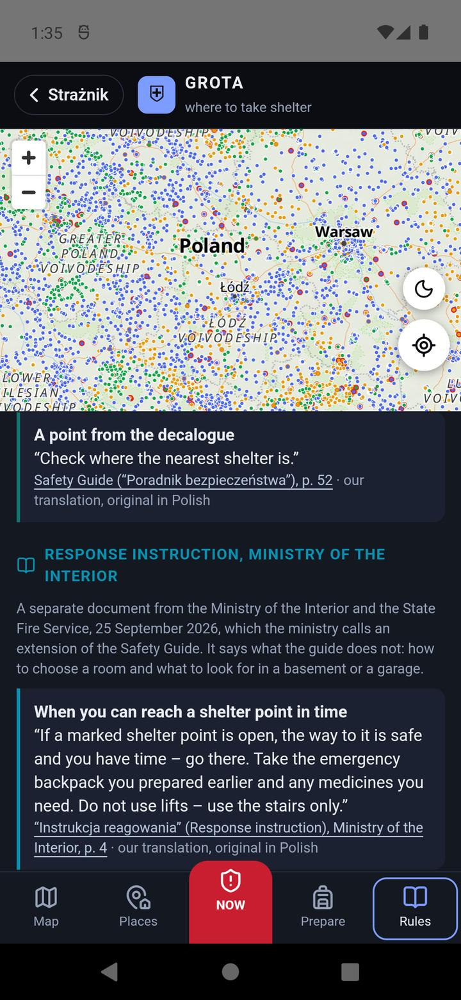
{kind=link}
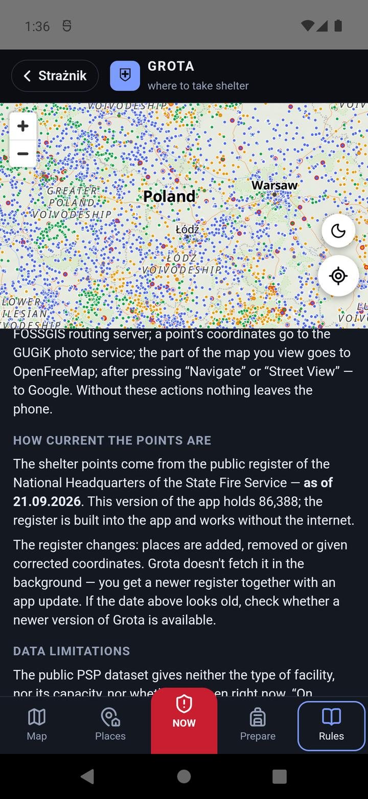
8. GROTA's language
GROTA speaks English, Ukrainian and Polish. It picks the language in this order:
- the language chosen in GROTA: Rules → the “Język · Language · Мова” card → Polski, English or Українська;
- if none was chosen — Strażnik's language (⚙ → App → language: Polish or English);
- if that isn't set either — the phone's language: Ukrainian gives Ukrainian, anything other than Polish gives English.
The change works at once, without restarting. Quotes from the Safety Guide in English and Ukrainian are our translation — each says under it that the original is Polish. Addresses and place names stay in Polish, as in the PSP list. Strażnik itself (outside GROTA) has Polish and English.
{kind=link}
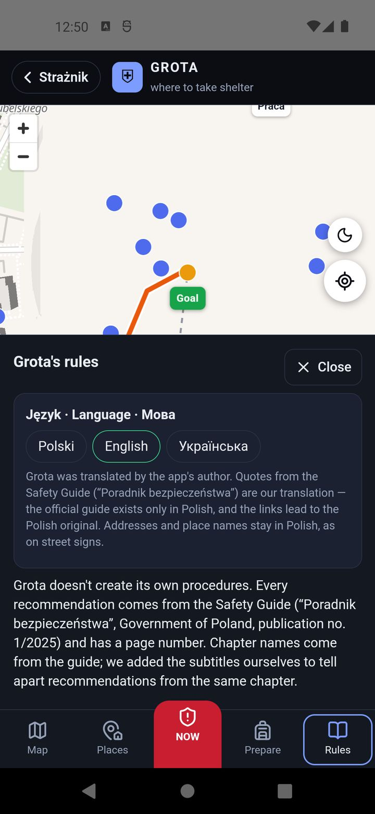
9. What works offline
| Feature | Without internet |
|---|---|
| Shelter points, the nearest point, distance | always works |
| My places, notes, recorded routes, checklists | always works |
| Map with streets | only after downloading an offline map |
| Route along roads | only with Map and routes downloaded; otherwise a straight line |
| Address search | knows only towns and villages (the position is the centre of the place) |
| NAVIGATE (Google Maps), Street View, aerial photo | does not work |
10. Questions and problems
Are these bunkers?
Unknown. The public PSP list does not distinguish a bunker, a shelter and a makeshift refuge, and the full register is not public.
Will the point be open?
GROTA does not know. “On request” points are usually locked, and “during set hours” ones are open only while the building is in use. Ask the building manager in advance and write the answer in the “How to get in” note at your place.
Why does GROTA guide me to a farther point, not the closest dot?
The closer dot has a doubtful location (the pin is next to a building) or does not match the type you chose. GROTA says so under the suggestion.
The pin is on a lawn or in a car park.
That is an error in the PSP source data, not in GROTA. Look for the building next to it. You can report it to the municipality or the fire service — a fix at the source corrects it in every app.
NAVIGATE does nothing.
No Google Maps or no internet. Use Draw the route here, on Grota's map on the point card.
The aerial photo takes long or does not show.
It is loaded live from GUGiK's Geoportal, which can be slow — sometimes over ten seconds. Offline there is no photo. In version 1.7.68 it did not appear at all; from 1.7.70 it works, on older Android phones too — update the app.
How does GROTA know how much time I have? Why is “make it / won't make it” sometimes missing?
From Strażnik's alert — from the threats Strażnik can see. When the alert rests only on indirect sources or Strażnik does not know the time, GROTA does not judge or urge. An RCB alert may concern something Strażnik cannot see, so with an RCB alert or sirens, don't count minutes.
I am abroad or by the border.
GROTA knows only Poland. By the border, if the phone put you on the other side of the river, set your position by hand.
I changed my home address and the shelters disappeared.
That is on purpose: after moving an address by more than 3 km GROTA asks whether to remove the shelters from the old area.
I have a new phone — where are my places?
Places, notes and routes stay only on the phone where you saved them. On a new one, add them again.
How do I delete everything?
Remove the offline map in Prepare → Delete, places with the bin in Places, the meeting place with Delete. Everything: Android Settings → Apps → Strażnik → Storage → Clear data (this also clears Strażnik's settings, e.g. the province for alerts).
When will GROTA be on iPhone?
In the next release, after Apple's review. GROTA will not be on the website: the list of points is well over ten MB of data that makes sense on a phone.
11. Privacy and sources
GROTA has no account, no ads and no analytics. The list of points and the search for the nearest one run on the phone. Places, notes, recorded routes, checklists and the offline map stay on the phone. Only what a given feature needs leaves the phone:
- a route on the map — your position and the chosen point go to the public FOSSGIS routing server (OSRM, OpenStreetMap data);
- address search — the typed address goes to the GUGiK service, after you press “Search”;
- aerial photo — an orthophoto tile from Geoportal (GUGiK) for the point you view;
- the base map — OpenFreeMap tiles for the area you view (nothing is sent with an offline map);
- offline map packages — downloaded from Strażnik's server;
- Google Maps and Street View — only when you tap the button.
Details: privacy policy.
Data: Polish State Fire Service HQ, “Punkty schronienia w Polsce”, dane.gov.pl, CC BY 4.0 · building types: © OpenStreetMap (ODbL) · rules and checklists: “Poradnik bezpieczeństwa”, Government of Poland, gov.pl, CC BY-SA 4.0 (our translation) · map: OpenFreeMap, © OpenStreetMap · routes: FOSSGIS (OSRM) · addresses and orthophoto: GUGiK.